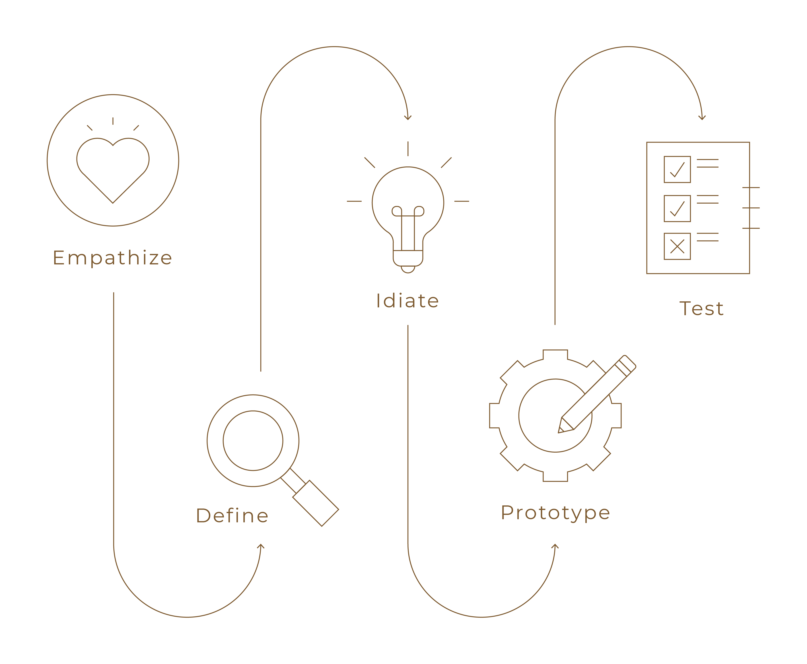

back to portofolio
National Security Agency
PROJECT DESCRIPTION:
The National Security Agency (NSA), a cornerstone of national security, requires a website redesign to adapt to evolving digital demands. This redesign aims to enhance user experience, bolster cybersecurity, improve transparency and public outreach, streamline information dissemination, and project a professional global image. It represents a strategic response to modern challenges, reinforcing the NSA's mission effectiveness.
ROLE IN TEAM:
Research, visual identity & prototyping.
THE GOAL:
Reorganize the website for streamlined information access, transparency, and enhanced cybersecurity, while simultaneously delivering an improved and intuitive user experience for a diverse audience, ultimately strengthening the agency's mission effectiveness and global reputation.

DESIGN PROCESS
PROTO PERSONA
We initiated our design process by creating a prototype persona, whom we named Josh. Josh, a 15-year-old student, is in the midst of crafting a school paper and simultaneously exploring the possibility of pursuing a career in cybersecurity. This proto persona serves as our guiding compass, embodying the diverse needs and aspirations of our user base, and informs our design decisions as we endeavor to create a user-friendly and engaging experience tailored to Josh's goals and challenges.
USER PATH
After defining a Proto Persona, we agreed that our users are gonna be students between elementary school and high school. This is some if the reason why we think they’ll be interested in visit the NSA website:
HEURISTIC EVALUATION
A heuristic evaluation is a structured and methodical approach to assessing the usability and effectiveness of a digital interface or system. It involves the examination of a product by usability experts, who utilize a set of established usability principles or heuristics to identify potential issues and areas for improvement. This evaluation method plays a crucial role in ensuring that user interfaces meet high standards of usability, efficiency, and user satisfaction, ultimately leading to an enhanced user experience.
OBJECTIVE
Our objective with the heuristic evaluation was to pinpoint the primary issues within the website and devise innovative solutions to address them, ultimately aiming to enhance the user experience. By focusing on key problem areas, we sought to implement changes that would not only resolve existing issues but also contribute to an overall improved and more user-friendly website. This approach aligns with our mission to create a digital platform that is intuitive, efficient, and a pleasure to navigate.
1.- NAVIGATION BAR
Some of the topics in the navigation bar do not appear to be relevant or prioritized.
Problem: Disorganized navigation bar.
Task: Provide users with a straightforward means of browsing and accessing the site's content.
Solution: Reorganize the sections and information on the website using a card sorting method.
BEFORE
AFTER